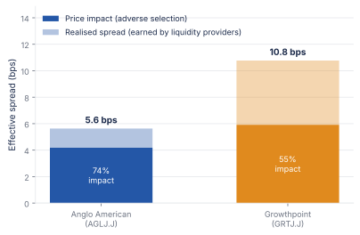
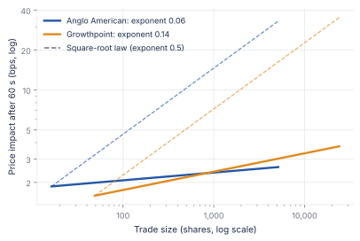
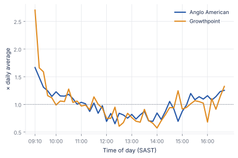
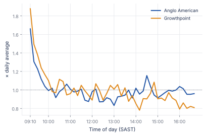
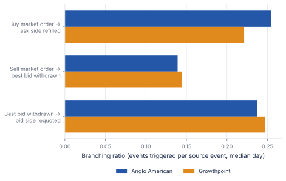
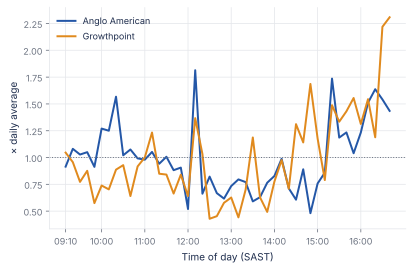

Headline numbers
Findings
Same one-cent tick, twice the cost
Growthpoint's price is a tenth of Anglo's, so its one-cent tick is ten times larger in relative terms. Its spread is about twice as wide in basis points, and a larger share of it goes to liquidity providers rather than to price impact.

Size matters less than expected
The price impact of a single trade grows very slowly with its size, far below the square-root law (dashed), because large orders are split into small pieces.

When you trade matters: volatility
Mid-price volatility is highest just after the open and falls through the morning.

When you trade matters: spreads
Spreads are widest after the open and narrow towards the close.

Order flow reacts to itself
A ten-variate Hawkes model fitted to every day finds near-critical self-excitation. Market orders are followed within milliseconds by withdrawals and refills at the best quotes.

Volume builds into the close
Traded volume rises through the afternoon, when liquidity is cheapest to access.

Selected figures from the study
 Effective vs quoted spreadsThe cost of trading
Effective vs quoted spreadsThe cost of trading
 Cost decomposition by trade sizeThe cost of trading
Cost decomposition by trade sizeThe cost of trading
 Intraday seasonality, AGLJ.JImpact, seasonality, resilience
Intraday seasonality, AGLJ.JImpact, seasonality, resilience
 Order-book resilience after large tradesImpact, seasonality, resilience
Order-book resilience after large tradesImpact, seasonality, resilience
 Hawkes excitation bubble plots, AGLJ.JA Hawkes model of order flow
Hawkes excitation bubble plots, AGLJ.JA Hawkes model of order flow
 Persistence of trade signsOrder flow and trade arrivals
Persistence of trade signsOrder flow and trade arrivals